A
A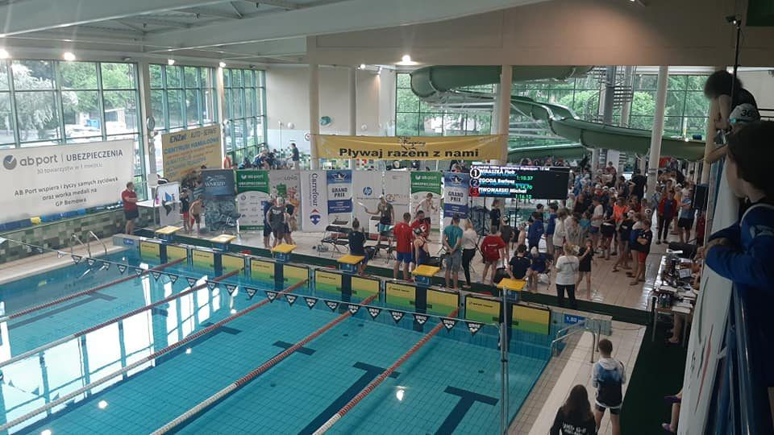
Uczniowski Klub Sportowy · od 2012
UKS Posejdon –
Athletic Pułtusk
Pasja. Trening. Rywalizacja. Sukces.
Uczymy pływać, trenujemy i startujemy w zawodach. Dzieci, młodzież i dorośli na krytej pływalni w Pułtusku.
Czerwiec 2026
15 medali na Mistrzostwach WarszawyOtwarte Letnie Mistrzostwa Warszawy · basen 50 m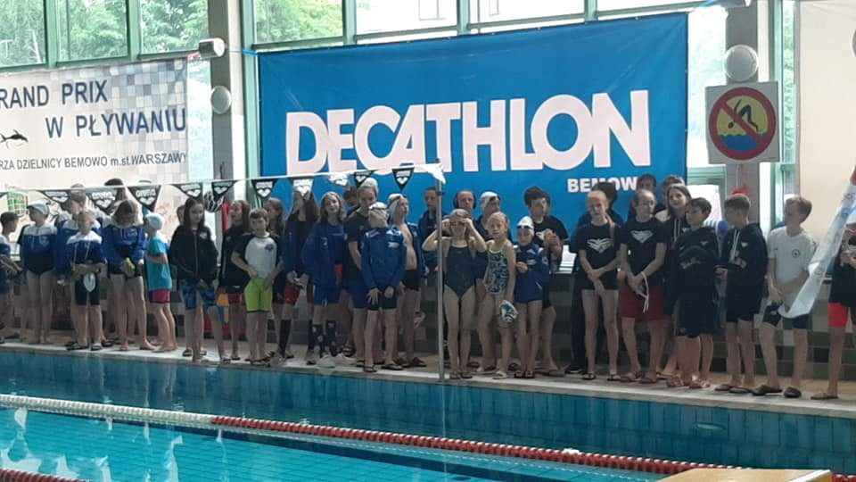

O klubie
Uczymy, trenujemy i bawimy się pływaniem
UKS Posejdon prowadzi naukę i doskonalenie pływania dzieci, młodzieży i dorosłych. Przygotowujemy młodych zawodników do rywalizacji sportowej i skupiamy pływaków z powiatu pułtuskiego oraz powiatów sąsiednich.
- Licencja Polskiego Związku Pływackiego
- Doświadczona kadra trenerska
- Od nauki pływania do zawodów
- Organizator zawodów w Pułtusku
Treningi
Znajdź trening
dla siebie
Od pierwszych ruchów w wodzie po starty w zawodach. Pomożemy dobrać grupę do wieku i umiejętności.
A BC
BCGrupa C
Basen sportowy
- Pon, Śr · 17:00–18:00
- Mariusz Mroziewicz, Franciszek Łyszkowski
- Tory 2, 3
 D
D E
EGrupa E
Basen rekreacyjny6–7 lat
- Pon · od 19:00
- Alicja Jagiełło, Mariusz Osica
- Tor 1
Nie wiesz, którą grupę wybrać? Trener oceni umiejętności dziecka na pierwszych zajęciach.
Zadzwoń: 515 156 693Kadra
Nasi trenerzy
Ludzie, którzy od lat uczą dzieci pływać i prowadzą zawodników do medali.

Trener · grupy D, E
Mariusz Osica
Założyciel klubu i trener od 2012 roku. Prowadzi zajęcia na basenie rekreacyjnym.

Trener · grupy A, B, C
Mariusz Mroziewicz
W klubie od początku. Przygotował zawodników do 15 medali na Mistrzostwach Warszawy i finału OMDO 2026.
AJMiejsce na zdjęcie
Trenerka · grupy D, E
Alicja Jagiełło
Prowadzi zajęcia grup D i E, w tym najmłodszych pływaków w wieku 6–7 lat.
FŁMiejsce na zdjęcie
Trener · grupa C
Franciszek Łyszkowski
Współprowadzi treningi grupy C.
Sportowe osiągnięcia
Sukcesy zawodników
Przez lata swojej działalności UKS Posejdon Pułtusk konsekwentnie rozwijał szkolenie pływackie dzieci i młodzieży, przygotowując zawodników do rywalizacji na szczeblu regionalnym i ogólnopolskim.
Największym sukcesem sportowym w historii klubu jest brązowy medal Mistrzostw Polski 14-latków zdobyty przez Franciszka Łyszkowskiego, trenowanego przez Mariusza Mroziewicza.
W finałach Mistrzostw Polski występowali również Oskar Hermanowski, Kacper Kowalczyk i Róża Sęczkowska, których trenerem był Mariusz Osica. Choć nie zdobyli medali mistrzostw kraju, sam awans do finałów stanowił znaczące osiągnięcie sportowe i potwierdzenie poziomu szkolenia prowadzonego w klubie.
Sukcesy zawodników są efektem systematycznej pracy, zaangażowania trenerów oraz wieloletniego rozwoju pływania w Pułtusku. Stanowią powód do dumy dla całego klubu i lokalnej społeczności, a jednocześnie motywację do dalszego doskonalenia szkolenia i stwarzania młodym sportowcom warunków do osiągania kolejnych sukcesów.

Złoty medal · 2026
Adam Mroziewicz
Otwarte Letnie Mistrzostwa Warszawy, pływalnia Warszawianki (basen 50 m), czerwiec 2026. Jedno z 15 miejsc medalowych klubu na tych zawodach.
Złoto2:37,89
Styl motylkowy200 m
2026
6 medali – X Sprinterski Festiwal Pływacki WarszawiankaPaździernik · 3 złote i 3 srebrne medale
2026
15 medali – Otwarte Letnie Mistrzostwa Warszawy12–13 czerwca, pływalnia Warszawianki (basen 50 m)
2026
Srebro w finale OMDO 2025/2026Adam Mroziewicz – 100 m stylem motylkowym (1:05,05); w klasyfikacji końcowej 5. miejsce, Róża Zimnicka 6.
2025
Dotacja MSiT – program „Klub”12 000 zł na sprzęt i prowadzenie zajęć
2023
Brąz MP 14-latków – Franciszek Łyszkowski100 m stylem klasycznym, finał A (1:10,59) – pierwszy medal MP w historii klubu
Aktualności
Najnowsze informacje
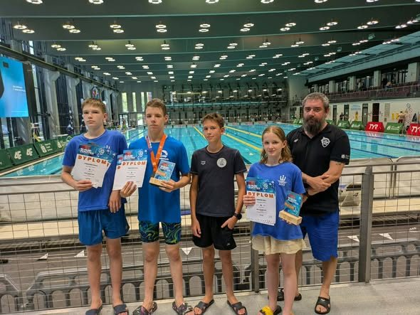
Finał „Od Młodzika do Olimpijczyka”
Srebro Adama Mroziewicza na 100 m stylem motylkowym (1:05,05) i miejsca w czołówce klasyfikacji końcowej OMDO 2025/2026.
Czytaj więcej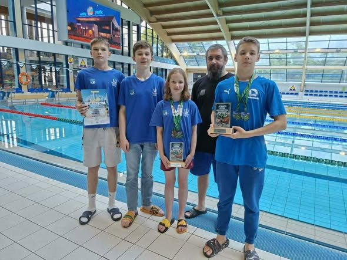
15 medali na Mistrzostwach Warszawy
Róża Zimnicka, Adam Mroziewicz, Jan Zimnicki i Roman Łyszkowski wracają z Warszawianki z 15 medalami i rekordami życiowymi.
Czytaj więcejGrafik
2026/2027
2026/2027
Grafik zajęć na sezon 2026/2027
Pięć grup treningowych, zajęcia w poniedziałki, środy i piątki. Sprawdź godziny swojej grupy.
Czytaj więcejZawody i wydarzenia
Najbliższe zawody
DataNazwa zawodówMiejsceSzczegóły
Galeria
Życie Posejdona
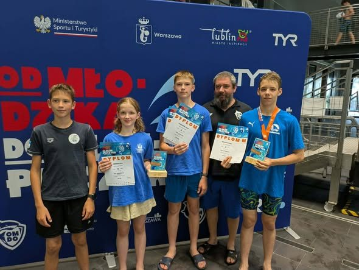
Finał OMDO 2026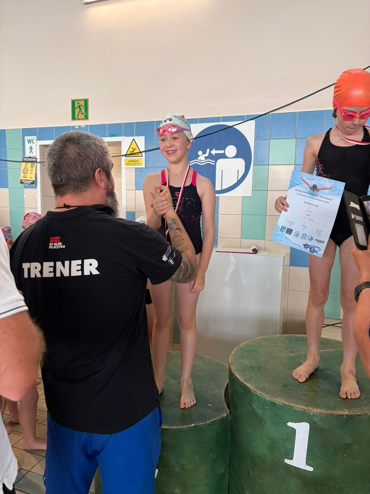
Treningi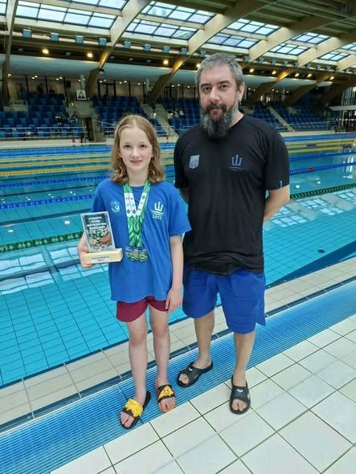
Mistrzostwa Warszawy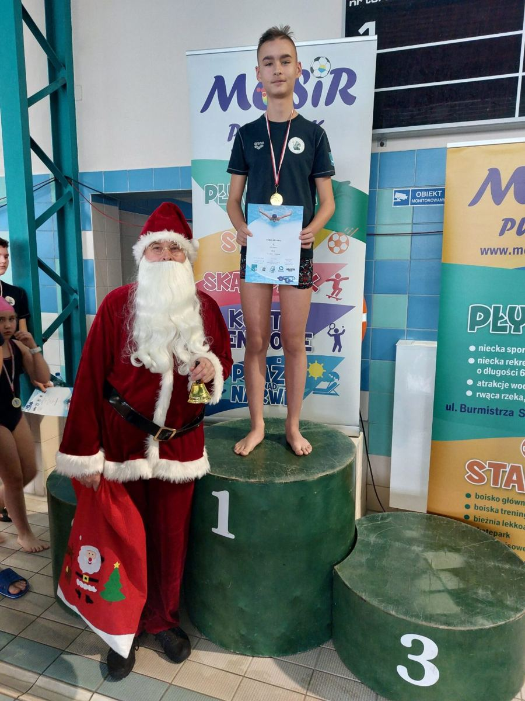
Zawody Mikołajkowe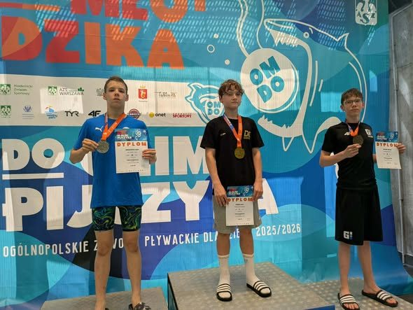
Podium OMDOWyjazd na Warszawiankę
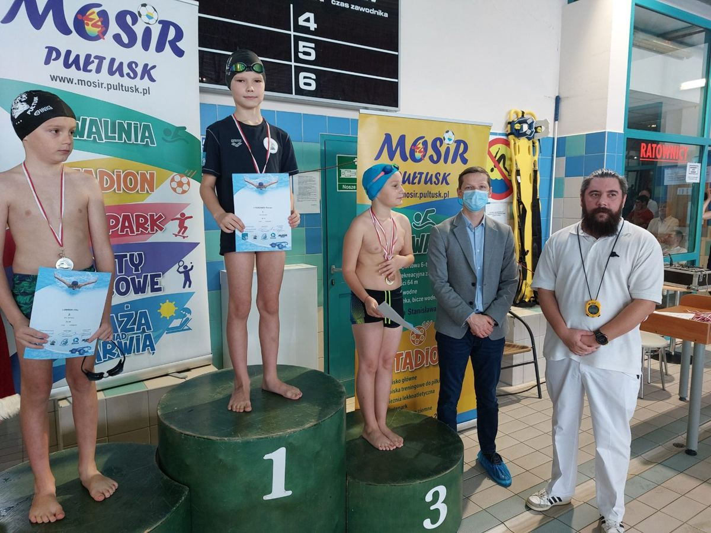
WydarzeniaDla rodziców
Wszystko, czego potrzebujesz w jednym miejscu
Organizacja zajęć, opłaty i dokumenty bez szukania po całej stronie.
Pytania o zajęcia?515 156 693
Informacje organizacyjnePierwszy trening, co zabrać na basen, odbiór dzieci.
Harmonogram treningówAktualny grafik wszystkich grup na sezon 2026/2027.
OpłatyWpisowe (jednorazowo), składka członka wspierającego, dane do przelewu.
Dokumenty do pobraniaDeklaracja członkowska, regulamin klubu, oświadczenia.
Zasady uczestnictwaRegulamin, bezpieczeństwo na basenie, RODO i wizerunek.
Kontakt z treneramiTelefon, e-mail i godziny, w których trenerzy odpowiadają.
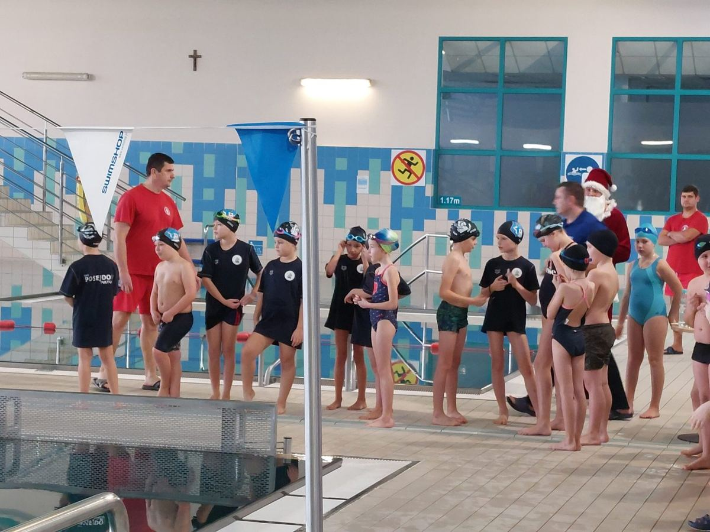
Dołącz do Posejdona
Chcesz, aby Twoje dziecko rozpoczęło przygodę ze sportem?
Zadzwoń lub napisz. Dobierzemy grupę do wieku i umiejętności, a dziecko przyjdzie na pierwszy trening.
- 1Kontakt
- 2Dobór grupy
- 3Pierwszy trening
Kontakt
Skontaktuj się z nami
Telefon515 156 693
E-mailposejdonpultusk@gmail.com
Siedziba klubuul. New Britain 1
06-100 Pułtusk
06-100 Pułtusk
Godziny kontaktu[pn–pt, godz. __–__]
Zapisy i pytania
Napisz, ile lat ma dziecko i jak radzi sobie w wodzie. Odpowiemy i zaproponujemy grupę.
Wspierają nas
Gmina PułtuskMOSiR PułtuskMinisterstwo Sportu i TurystykiPolski Związek PływackiHolistic Body